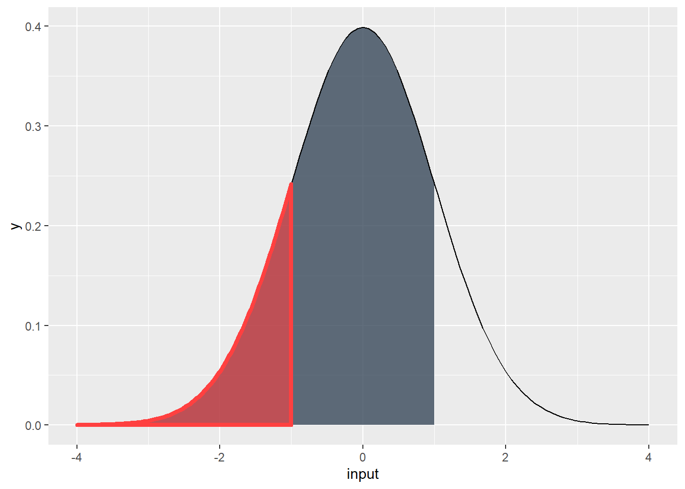

For this R module, we’ll use R to simplify a somewhat
complicated task – creating confidence intervals around a point estimate
of population parameters. For all the examples below, we’ll keep things
simple by assuming that the population parameters we’re interested in is
the population mean, and that the best (i.e., least biased and most
efficient) point estimator of that parameter is the sample mean.
Before we get started, let’s revisit the properties of the normal
distribution: a symmetrical distribution around an expected value mean
and a standard deviation. We can generate an example of this
distribution in R:
# This code generates 200 equally-spaced values between -4 and 4, which we'll
# use as the 'input values'
input <- seq(from = -4,
to = 4,
length = 200)Next, we’ll calculate the normal probability density of
input using dnorm(). This calculates the
likelihood that each value of input will be observed, and
assigns it to the variable output. Note that we must
specify the mean and standard deviation; we’ll set them to 0 and 1,
respectively.
output <- dnorm(x = input,
mean = 0,
sd = 1)We can plot these to see the classic “bell-shaped” curve.
For normally distributed data, we can estimate the probability of observing a range of values by calculating the area under the curve that corresponds to those values. For example, consider the area under the curve below. What is the probability that any value of x will be \(\leq\) 0?
It should be 50% because the curve is symmetric, right? We can test
this in R with pnorm(), which calculates the
probability of a value occurring to the left of the input
q:
pnorm(q = 0,
mean = 0,
sd = 1)## [1] 0.5Or, 50%.
We could substitute a value for q, and
pnorm() would calculate the probability of that value (if
you want, the “area under the curve” to the left of that value).
But what if we want the probability for a specific range such as from -1 to +1 such as the figure below?
All we’d need to do is subtract the probability of the value on the right by the probability of the value on the left:

p_1 <- pnorm(1, mean = 0, sd = 1)
p_2 <- pnorm(-1, mean = 0, sd = 1)
p_1 - p_2## [1] 0.6826895We can interpret this as meaning there being a 68.27% probability of
a single observed value of input as falling between -1 and
+1.
input:
qnorm()What if we know the probabilities we want to achieve, but don’t know
the values of input associated with these probabilities?
Consider the figure below; 95% of the area of the curve lies to the left
of what value of input?
We can use qnorm(), which is the “inverse” of
pnorm(); qnorm() returns the value of
input to the left of a probability p (the area
under the curve, visually speaking).
qnorm(p = 0.95,
mean = 0,
sd = 1)## [1] 1.644854We can interpret this as meaning there is a 95% probability of a
single observed value of input as falling between -4 and
1.644854 (note, these values of input are also z-scores,
since our mean is 0 and our standard deviation is 1). Because the area
under the curve must sum to 1, we can also say that the probability of
observing a value input that is more than 1.644854 is 5%
(100% - 95%).
qnorm() to calculate the values of
input for each of the following circumstances. Provide both
the calculated values of input and your R code.Understanding the normal distribution is important to understanding confidence intervals. Why? Recall that we can usually assume that our sampling distribution of a variable is normal even if the actual population distribution isn’t normal. If the underlying probability function that governs the sampling process is normal, we can use the logic described above to assess how likely a range around a given sample mean – which is a point estimate of our population – will actually contain the true population mean.
Suppose we’ve collected a random sample of 10 recent graduates and asked what their annual salary is. We can enter our results in R by creating a vector:
x <- c(44617, 7066, 17594, 2726, 1178, 18898, 5033, 37151, 4514, 4000)Our goal is to use our sample to create an estimate of the population mean (i.e., the average salary of all recent graduates), and create a measure of how confident we are that the population mean is within a particular interval around our estimate. Put another way, we need to create a point estimate of the population from our sample and then create confidence intervals using that estimate.
In addition to our sample values, we are told that the standard
deviation for salary among our population is $15,000, but that the
population mean salary is unknown. For the sake of argument, let’s
assume the population distribution is approximately normal. Let’s save
this as sdev:
sdev <- 15000With this information, let’s calculate a 70% confidence interval around our sample mean. This means that we want to find two currently unknown values for our sample mean (\(\bar{X}\), or “X-bar”). 70 time out of 100 samples, we expect the actual population mean to fall in between these two values. In other words, we’re interested in finding the values of \(x\) that correspond to this area under the normal curve:
Let’s approach this with a bit of R programming. Suppose
we have a set of data and want to regularly find a confidence interval
of a given size (e.g., 70% or 95%). The formula for a confidence
interval under these assumptions is: \[
\bar{X} = \pm z\frac{\alpha}{2}\frac{\sigma}{\sqrt{n}}\] If we
want a confidence interval (CI) of 70%, our alpha needs to be
0.3 (CI = \(1 - \alpha\)).
\(\alpha\) then refers to the areas
both to the left and to the right of our unknown \(\bar{X}\) values (or the area “outside” our
shaded region). Since the total area we’re interested in is 30%, we need
to divide \(\alpha\) by two. In other
words, we need the z-scores for \(x <
15\%\) and \(x > 85\%\).
Remember, we can use qnorm() for this:
z.alpha.2 <- qnorm(p = 0.85,
mean= 0,
sd = 1)We can also easily calculate the mean:
xbar <- mean(x)
xbar## [1] 14277.7So, we know the z-scores for our interval and the sample mean, \(\bar{X}\). Since we also know the standard deviation \(\sigma\), we can simply plug these into our formula to provide our answer in real units of x (in this case, dollars).
lbound <- xbar - (z.alpha.2 * (sdev / sqrt(10)))
ubound <- xbar + (z.alpha.2 * (sdev / sqrt(10)))
lbound## [1] 9361.465ubound## [1] 19193.94What does this mean? We are 70% confident that the actual (population) mean salary of all recent graduates lies within the range between $9361.46 and $19193.94
Let’s take everything we’ve done so far and compose an R function. Rather than running everything line-by-line, we can call this function with the arguments we set, which makes this a lot more repeatable, reproducible, and reduces our chance of errors.
To create a function in R, we use the form:
function_name <- function(arg1, arg2, etc.) {
contents of our function...
}We can call this function by first, defining the function in our
environment by hitting Ctrl-Enter within an R script, and
second, using the function just like any other R function.
Let’s try it out! We’ll call our function confidence. We
need a couple arguments (inputs, options, etc.), including: our data,
input, our population standard deviation (15,000), and our
desired confidence interval (70%, or 0.7)
confidence <- function(x, sdev = 15000, ci) {
# Notice that we've set the sdev argument to 15000, which means we've given
# the function a default argument. We don't need to specify sdev whenever we
# call the function, but if we do, it'll overwrite our default argument.
# The length function gives us the number of elements, or n in our equation for CIs
n <- length(x)
xbar <- mean(x)
alpha <- (1 - ci) / 2
z.alpha.2 <- qnorm(p = 1 - alpha,
mean = 0,
sd = 1)
lbound <-
xbar - (z.alpha.2 * (sdev / sqrt(n)))
ubound <-
xbar + (z.alpha.2 * (sdev / sqrt(n)))
# Let's round to 2 decimals, so we have dollars and cents
lbound <- round(lbound, digits = 2)
ubound <- round(ubound, digits = 2)
return(c(lbound, ubound))
}Let’s try our new function!
confidence(x = x,
sdev = 15000,
ci = 0.7)## [1] 9361.46 19193.94Neat!
Writing functions is by far the best thing to do to perform tasks efficiently. Imagine you needed to calculate confidence intervals for hundreds of datasets; by writing functions and doing things in scripts, you can automate the entire process!
In addition to the questions above, answer the following in your lab report:
© 2022 Maggie Sugg & Harrison Brown. v.1.0.1